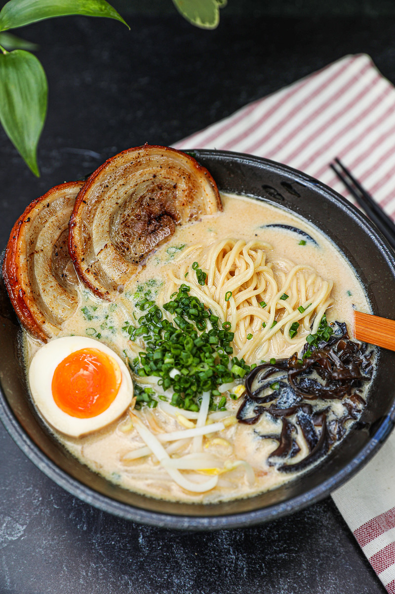

Tonkatsu Ramen
Description
This is the ultimate, the most full flavored soup you will ever eat. This soup has a rich and creamy pork flavor, paired with an amazing crispy and juicy chashu (marinated pork belly) and bright green onions. This is the King of all ramen and maybe even all soups!
Ingredients
- 3 pound pigs trotters (skin on) (you can also use some spine and neck bones as well. You definitely want some trotters though)
- 1 bunch green onion
- 1 large yellow onion
- 2 shallots
- 2 inch knob ginger
- Water to cover
- 4 garlic cloves, peeled
- 2 pound pork belly (skin on or off)
- 1/2 cup soy sauce or tamari
- 3/4 cup mirin
- 1/3 cup water
- 1 cup rice wine (1/2 cup sake, 1/2 cup shiao tsing wine *or just use all sake*)
- 2 inch knob ginger
- 1 bunch green onion
- 4-5 cloves garlic
- Dashi- 3-2inch pieces kombu, 1/2 cup bonito flakes, 3/4 cup water
- 3/4 cup soy sauce
- 1/4 cup + 2 Tbsp mirin
- 1/4 cup shiitake mushroom soaking water (optional but recommended)
- 1/4 cup chashu braising liquid (optional)
Broth
Chashu (marinated pork belly)
Tare (tar-A)
Steps
- Add pigs trotters to a large stock pot. Fill with water until it covers at least 2 inches above the bones. Bring up to a rolling boil for 10 minutes. Skim foam that forms on the top with a mesh strainer. Continue this skimming process until the 10 minutes is up
- Once done, strain bones out through a colander, rinse with cold water and place back into the pot. Cover with water. To the pot, add green onions, shallots, yellow onions and peeled ginger/garlic. Bring up to a rapid bowl over high heat; and once at a boil, lower temperature so it maintains a boil. Stir pot every now and then to prevent pork from resting at the bottom. Continue this for 12 hours. Remember to add water throughout so it doesn’t reduce all the way.
- For the protein, cut green onions into 2 inch sections and place at the bottom of a cast iron pot. Peel one knob of ginger, slice to a ¼ of an inch thick and place in the pot. Add 4-5 whole cloves of peeled garlic, ½ cup sake, ½ cup rice wine, ¾ cup mirin, ½ cup soy sauce/tamari, ⅓ cup water.
- Take your pork belly and roll it up lengthwise into a log. To hold it together, use kitchen twine and tie in three separate sections. Lower pork belly into a cast iron pot, bring liquid up to a boil, reduce down to a simmer, cover loosely with a lid and place in a 300 degree Fahrenheit oven for 3-4 hours.
- For the toppings, thinly slice green onions. Rehydrate dried shiitake mushrooms according to packaging instructions. Slice nori into small 3-inch rectangles.
- For the soft boiled egg, bring a pot to a rolling boil and drop in whole eggs. Let simmer and place a timer for 6-7 minutes. Pull out and immediately drop them into an ice bath.
- For the tare, add 2-3 pieces of kombu to a sauce pot. To that, add water and set to medium-low heat. Bring to a steamy heat and let steep for 10 minutes. Add in your bonito flakes and let steep again for 5 minutes.
- Once done steeping, pour through a fine mesh sieve into a medium sized bowl. To this, add soy sauce, mirin, chashu braising liquid and the mushroom liquid. Give it a stir and lightly season with salt.
- To assemble the soup, first cook your ramen noodles in boiling water. Slice your chashu in ½ thick rounds.
- Place a couple spoonfuls of your tare at the bottom of a serving bowl and follow with broth. Add cooked noodles, chashu slices, a soft boiled egg, minoki mushrooms, green onions, shiitake mushrooms and rectangles of nori.